A interceptação de comunicações e sinais é uma das técnicas de investigação mais importantes dentre as regularmente utilizadas ao longo da história da Polícia Federal, contribuindo decisivamente para a coleta de provas fundamentais em praticamente todas as grandes operações policiais. Tal técnica, que contempla a interceptação telefônica, a interceptação telemática e a interceptação/captação ambiental de sinais eletromagnéticos, ópticos ou acústicos, é objeto de constante aprimoramento pelos policiais federais, e mesmo atualmente, quando conversas telefônicas via operadoras estão em absoluto desuso, pode revelar dados de interesse à investigação e formar provas tendentes a reforçar a autoria delitiva.
Fundamental registar, de início, que sua implementação em ambientes não abertos ao público ou em meio que deveria proporcionar privacidade (ex: terminal telefônico) depende de prévia autorização judicial, devendo, portanto, ser precedida de representação formalizada pelo Delegado de Polícia Federal.
Tal restrição contempla a interceptação telefônica, a interceptação telemática e a interceptação/captação ambiental de sinais eletromagnéticos, ópticos ou acústicos, conforme será visto adiante.
A Constituição Federal, ao tratar do tema da intimidade, inseriu a garantia do sigilo das comunicações em seu artigo 5º, inciso XII, ao dispor sobre a inviolabi lidade do sigilo da correspondência e das comunicações telegráficas, de dados e das comunicações telefônicas, excepcionando a salvaguarda, no último caso, por ordem judicial, nas hipóteses e na forma que a lei estabelecer para fins de investigação criminal ou instrução processual penal.
Apesar da literalidade do dispositivo, que aparentemente reveste algumas inviolabilidades de caráter absoluto, é pacífico na doutrina e jurisprudência pátria que a Carta Magna, quando protege o sigilo das comunicações (não somente da telefônica), o faz limitadamente, em consonância com o princípio da proporcio nalidade. Como é cediço, nenhum direito ou garantia fundamental é absoluto.
A Lei n.º 9.296/96, em seu artigo 1º, regulamenta a parte final do inciso XII, artigo 5º da Constituição Federal. Em consonância com o citado dispositivo constitucional, prevê que a interceptação de comunicações telefônicas, de qualquer natureza, assim como interceptação do fluxo de comunicações em sistemas de informática e telemática, para fins de investigação criminal e instrução processual penal, dependerá de circunstanciada ordem judicial, que tramitará em segredo de justiça.
Na esteira, o seu artigo 2º estampa os pressupostos para o deferimento da medida de monitoramento telefônico e telemático, com destaque para o inciso II, que explicita o caráter de ultima ratio do instituto:
a) indícios razoáveis de autoria ou participação em infração penal;
b) prova não puder ser feita por outros meios disponíveis;
c) fato investigado constituir infração penal punida com pena de
reclusão (ou conexas aos crimes cuja pena seja de reclusão, posição
do STF29);
d) descrição clara da situação objeto da investigação, com a indica
ção e qualificação dos investigados, salvo manifesta e justificada
impossibilidade.
Realizado o planejamento e, observando os já citados princípios da simpli cidade e da proporcionalidade, identificada a necessidade da medida, deverá o Delegado de Polícia Federal verificar junto à chefia imediata a viabilidade de recursos humanos e materiais para execução da técnica em comento antes de representar ao juízo, a fim de se identificar, por exemplo, eventual impossibilidade técnica de implementação da interceptação após deferimento judicial da medida, ou a existência de outras investigações consideradas prioritárias pela Administração e que possam estar empregando todos os recursos disponíveis naquele momento.
Convém pontuar que não há prevalência de uma técnica de investigação sobre outra; a apuração do fato deve sempre contar com o emprego de diversos meios. Assim, para conferir maior robustez aos elementos colhidos no monitoramento, a interceptação telefônica deve ser complementada por outros instrumentos de investigação, tais como diligências de campo, vigilâncias, escutas ambientais, pesquisas diversas, entre outros.
Com as novas formas de comunicações por aplicativos de mensagens, a interceptação telefônica perdeu um pouco o seu destaque na investigação, tendo em vista que as pessoas atualmente se comunicam rotineiramente por aplicativos de mensagens como WhatsApp e Telegram, entre outros. Além disso, caso deferida a interceptação telefônica, ela terá um prazo de 15 dias de vigência, quando se fará necessário o envio de nova representação solicitando a renovação da medida. Nesse contexto, muitas equipes de investigação têm optado por realizar somente o afastamento do sigilo telemático e o acesso a registros telefônicos, em períodos da investigação, considerando que o prazo para realização dessas medidas pode ser maior. 29 “(...) Uma vez realizada a interceptação telefônica de forma fundamentada, legal e legítima, as informações e provas coletas dessa diligência podem subsidiar denúncia com base em crimes puníveis com pena de detenção, desde que conexos aos primeiros tipos penais que justificaram a interceptação. Do contrário, a interpretação do art. 2º, III, da L. 9.296/96 levaria ao absurdo de concluir pela impossibilidade de interceptação para investigar crimes apenados com reclusão quando forem estes conexos com crimes punidos com detenção. Habeas corpus indeferido.” (HC 83515, Relator (a): Min. Nelson Jobim, Tribunal Pleno, julgado em 16/09/2004, DJ 04-03-2005 PP-00011 EMENT VOL-02182-03 PP-00401 RTJ VOL-00193-02 PP-00609).
Em que pese tais fatos, ainda se vislumbram muitas utilidades e ganhos com o uso dessa técnica de investigação, como, por exemplo, quando o investigado agenda algum serviço, marca uma consulta ou negocia um bem, oportunidade na qual o investigador consegue saber aonde ele irá, poderá ir até o local acompanhá-lo e verificar, por exemplo, o veículo que ele está utilizando ou colocar um rastreador.
Decidindo-se pela utilização da técnica, a representação elaborada pelo Delegado de Polícia Federal deve relacionar os terminais telefônicos cuja intercep tação se pretende, indicando a operadora e a identidade do responsável pelo uso, mesmo que em um primeiro momento essa identificação do usuário seja feita de maneira precária. Pode até ocorrer que a identidade do portador do telefone seja completamente desconhecida pela equipe de investigação, por exemplo, ciência somente de um simples vulgo, o que ainda assim não inviabiliza a interceptação do terminal utilizado, cabendo ao delegado, nesses casos, justificar a necessidade da medida em face da pessoa de identidade ainda desconhecida.
Deve-se fazer também constar na representação pedidos de acesso a demais dados telefônicos que decorrem naturalmente do procedimento de interceptação, tais como cadastros, históricos de chamadas, localização em tempo real das Estações Rádio-Base (ERBs), número de IMEI/ESN dos aparelhos e demais meios, disponibilizados pelas operadoras, que possibilitem a localização de um aparelho (v.g., localização do aparelho em tempo real por meio de antenas 3G/4G/5G), devendo esse pedido ser estendido não somente aos telefones monitorados, mas também aos seus interlocutores e até mesmo terminais de terceiros, desde que demonstrado o interesse das investigações.
Note-se que essa extensão a terminais telefônicos de interlocutores e de terceiros não abarca, em hipótese alguma, as conversas telefônicas e o conteúdo de mensagens. Caso seja identificada, ao longo do período da interceptação, a necessidade de alcance desses dados, deverá ser oferecida nova representação pela autoridade policial.
Com o advento da portabilidade de números de telefone entre operadoras, também deverá o Delegado de Polícia Federal tomar as cautelas necessárias para alcançar a interceptação da comunicação desejada, identificando corretamente a qual operadora está vinculada a linha a ser interceptada, evitando-se o envio equivocado de ordens judiciais com a consequente perda de tempo. Para identi ficação da operadora de telefonia à qual um terminal telefônico está vinculado, é possível consultar a Operadora de Acesso Fixos e Móveis - abr telecom – pelo endereço eletrônico https://consultanumero.abrtelecom.com.br/consultanumero/ consulta/consultaSituacaoAtualCtg.
Cabe relembrar que dados cadastrais podem ser requisitados diretamente pelo Delegado de Polícia Federal, sem a prévia autorização judicial, mas essa tramitação demanda certo tempo para seu processamento junto às operadoras de telefonia. Assim, a fim de conceder agilidade operacional, costuma-se representar em conjunto pelo acesso a sistemas por meio dos quais os policiais podem ter acesso direto aos cadastros de usuários, permitindo consultas com resultados mais rápidos, pelas plataformas das operadoras.
O art. 5º da Lei n.º 9.296/96 prevê que a execução da diligência não poderá exceder o prazo de 15 dias, admitindo-se prorrogação por igual período, desde que comprovada a indispensabilidade do meio de prova. Em consonância com o citado dispositivo, a jurisprudência dos tribunais superiores é pacífica no tocante à viabilidade de sucessivas prorrogações, notadamente, diante de fatos graves e complexos.
Por outro lado, deverá o policial se atentar que o excesso de renovações por um período além do razoável pode gerar a nulidade da medida. A implementação de sucessivas prorrogações está condicionada à necessidade e proporcionali dade, mesmo porque, a técnica deverá se submeter ao princípio da simplicidade operacional, já que a interceptação demanda o emprego de recursos humanos, materiais e tecnológicos diferenciados.
A teor do art. 70 da Instrução Normativa 255/2023-DG/PF, todo procedimento de interceptação de comunicação deve ser precedido de instauração de inquérito policial, sendo que o procedimento em si deverá correr em autos eletrônicos apartados. No âmbito da Polícia Federal, a interceptação deverá ser formalizada em um Registro Especial (RE); junto ao Poder Judiciário, na forma de medida cautelar de quebra de sigilo e/ou interceptação.
Cumpre destacar que a Lei 9.296/96 não estabelece o prazo para serem iniciadas as interceptações, sendo o entendimento que o prazo de 15 dias é contado a partir do dia em que se iniciou o desvio e não da data da decisão que a autorizou:
“A Lei n. 9.296/1996, que regula a quebra de sigilo das
comunicações telefônicas, estabelece em 15 dias o prazo para
duração da interceptação, porém não estipula termo inicial
para cumprimento da ordem judicial. No caso, a captação das
comunicações via telefone iniciou-se pouco mais de três meses
após o deferimento, pois houve greve da Polícia Federal no
período, o que interrompeu as investigações. A Turma entendeu
que não pode haver delonga injustificada para o começo da
efetiva interceptação e deve-se atentar sempre para o princí
pio da proporcionalidade, mas, na hipótese, sendo a greve
evento que foge ao controle direto dos órgãos estatais, não
houve violação do mencionado princípio. Assim, a alegação
de ilegalidade das provas produzidas, por terem sido obtidas
após o prazo de 15 dias, não tem fundamento, uma vez que
o prazo é contado a partir do dia em que se iniciou a escuta,
e não da data da decisão judicial que a autorizou. Precedente
citado: HC 135.771-PE, Dje 24/8/2011” (HC 113.477-DF, Rel.
Min. Maria Thereza de Assis Moura, julgado em 20/3/2012).
Quanto ao direcionamento do pedido, de acordo com o art. 3°-B, caput, do CPP, o juiz de garantias é o responsável pelo controle da legalidade da investi gação criminal e pela salvaguarda dos direitos individuais cuja franquia tenha sido reservada à autorização prévia do Poder Judiciário. O art. 3°-B, XI, “a”, do CPP dispõe que cabe ao juiz de garantias decidir sobre os requerimentos de interceptação telefônica, do fluxo de comunicações em sistemas de informática e telemática ou de outras formas de comunicação.
São exceções ao juiz de garantias os processos de competência originária dos tribunais (Lei 8.038/90), processos de competência do tribunal do júri, casos de violência doméstica e familiar e infrações de menor potencial ofensivo.
O art. 6º, caput, da Lei 9.296/96 menciona que, deferido o pedido, a auto ridade policial conduzirá os procedimentos de interceptação telefônica, realizará as devidas comunicações e, cumprida a diligência, encaminhará o resultado ao juiz acompanhado de auto circunstanciado.
Dessa forma, em posse da decisão judicial que defere a interceptação telefônica, a equipe de investigação deverá realizar medidas internas e externas necessárias para início do monitoramento.
No âmbito interno, a execução da medida na PF conta com um software próprio, chamado SIS2 (Sistema de Interceptação de Sinais 2.0). Para tanto, é necessário realizar o registro da operação no sistema SIGACRIM (aplicativo de Gestão de Operações de polícia judiciária) e comunicar o deferimento da medida ao órgão de inteligência regional (SIP – Setor de Inteligência Policial), por meio do SEI (Sistema Eletrônico de Informações), solicitando a criação da operação no SIS2.
Com a abertura da operação no SIS2 iniciam-se as medidas externas. Abaixo, a página inicial do SIS2 para ilustração.
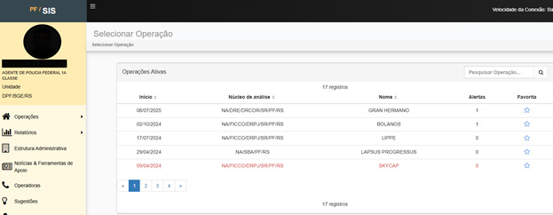
Figura 93 - Sistema de interceptações de Sinais 2.0 (SIS 2)
O procedimento de execução da interceptação telefônica tem suas regras gerais estabelecidas na Lei 9.296/1996, embora possa sofrer pequenas adaptações e variações em função das leis de organização judiciária locais, por procedimentos modificáveis de operadoras ou mesmo em razão do avanço tecnológico. Assim, por exemplo, após decisão de deferimento, alguns juízos expedem “alvarás” orde nando às operadoras o início da implementação da medida, já outros expedem essas mesmas ordens na forma de ofício e, em alguns casos, é utilizada a própria decisão para implementação.
A comunicação com as operadoras de telefonia ocorre mediante plata formas institucionais específicas de cada empresa ou via correio eletrônico. Preliminarmente, o Policial Federal deve solicitar credenciamento de acesso às referidas plataformas, obtendo login e senha individuais. Por meio desses sistemas, possibilita-se o envio de decisões judiciais e alvarás, bem como a requisição de dados cadastrais, informações de ERBs (Estações Rádio Base), extratos de conexão e demais elementos probatórios pertinentes à investigação.
No cenário nacional, observa-se que as três principais operadoras de telefonia
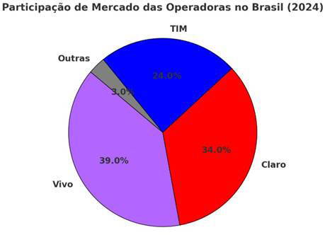
Em regra, as plataformas disponibilizadas por essas operadoras são: VIVO https://vigia.vivo.com.br/login - para solicitação e consulta de ERB; https://portaljud.vivo.com.br/portaljud/login.jsf - para solicitação de cadastros e extratos; TIM https://poarg.timbrasil.com.br/ - Consulta de ERB; https://infoguard.timbrasil.com.br/login.html?login_error=true – para solici tação de ERB, extratos e cadastros; CLARO https://vigia.claro.com.br/ - para solicitação e consulta de ERB, solicitação de extratos e cadastros. Por fim, é de relevo destacar que é dispensável a transcrição integral de todas as gravações derivadas do monitoramento telefônico. Apesar de a literalidade do art. 6º da Lei n.º 9.296/96 sugerir a necessidade de transcrição integral das comunicações gravadas, já está sedimentado, tanto na doutrina quanto na juris prudência, que somente as gravações de interesse para a investigação precisam ser transcritas, exigindo-se somente que se disponibilize à defesa o acesso a todas as gravações realizadas, observando-se que, tais dados deverão ser baixados ao final da investigação e disponibilizados para a justiça.
Destaca-se que a defesa não tem acesso às medidas durante a sua execução, ou seja, trata-se de medida cautelar inaudita altera parte, sendo o contraditório diferido para o momento processual adequado. Tal observação é relevante para reforçar os cuidados com a cadeia de custódia, pois os questionamentos da idoneidade técnica, autenticidade da prova, identificação de voz, entre outros, ocorrerão somente após a conclusão da medida.
A Lei 12.850/13, art. 3°, inciso IV, dispõe sobre alguns meios de obtenção de provas que estão disponíveis aos investigadores:
“Art. 3º Em qualquer fase da persecução penal, serão permi
tidos, sem prejuízo de outros já previstos em lei, os seguintes
meios de obtenção da prova:
(…)
IV - acesso a registros de ligações telefônicas e telemáticas, a
dados cadastrais constantes de bancos de dados públicos ou
privados e a informações eleitorais ou comerciais;”
Os dados cadastrais inscritos em bancos de dados (públicos ou privados) referem-se à identidade (nome, nacionalidade, naturalidade, data de nascimento, estado civil, profissão, RG, CPF, filiação e endereço), não revelando aspectos da vida privada ou da intimidade do indivíduo cuja tutela exija reserva de jurisdição. Portanto, no que tange a tais dados, os órgãos públicos e privados possuem o dever de fornecer as informações à polícia judiciária e ao Ministério Público, independentemente de ordem judicial (art. 2º, § 2º da Lei n.º 12.830/13; art. 15 da Lei n.º 12.850/13; art. 17-B da Lei n.º 9.613/98; art. 10, § 3º da Lei n.º 12.965/14; e art. 13-A do CPP).
De outro modo, o acesso aos registros de ligações telefônicas abrange infor mações referentes a: terminais que receberam ou efetuaram telefonemas; dados da comunicação (duração, data e hora das chamadas); identificação dos números dos terminais chamadores e chamados; números identificadores dos aparelhos (IMEIs); identificação das Estações Rádio-Base (ERBs) utilizadas pelos interlocutores; e dados relativos ao recebimento e envio de mensagens de texto (SMS).
Feita essa distinção, observe-se que, para a obtenção do acesso a registros telefônicos, deve o Delegado de Polícia Federal representar ao juízo, já que atu almente, para o Supremo Tribunal Federal – STF, a medida está sujeita à cláusula de reserva jurisdicional (ADI 4.906).
A representação para interceptação telefônica deve demonstrar, fundamentada mente, os indícios de materialidade delitiva, a utilidade concreta da medida para a investigação, bem como a identificação do terminal telefônico ou da estação rádio-base e o período de monitoramento pretendido.
Entretanto, é necessário distinguir essa hipótese do acesso aos dados meramente cadastrais dos assinantes, como nome, CPF, endereço e número de linha telefônica. Nesses casos, não se exige autorização judicial, tampouco a comprovação da inviabilidade de obtenção da prova por outros meios, uma vez que tais informações não se encontram protegidas pelo sigilo das comunicações, conforme reiterado entendimento do Supremo Tribunal Federal.
Diversamente, o acesso aos registros telefônicos (tais como histórico de ligações, localização de ERBs e dados de comunicações) insere-se no âmbito do princípio da subsidiariedade do Direito Penal, que impõe a necessidade de demonstração de que não há outros meios menos invasivos para obtenção das mesmas informações. Assim, a quebra desses registros depende de autorização judicial devidamente fundamentada, sob pena de violação à garantia constitucional do sigilo das comunicações.
No geral, o pedido de acesso aos dados e registros telefônicos integram o rol de pedidos contidos nas representações por interceptação telefônica, medida bem mais drástica e invasiva à esfera juridicamente protegida do cidadão, devendo ser destacado a diferença dos pedidos principalmente quanto ao prazo de vigência da medida, pois a interceptação tem o prazo de vigência de 15 dias (Lei 9.296/96), já o acesso aos registros telefônicos podem tem um prazo diverso estipulado pelo juízo (prazo proporcional e razoável).
A análise pormenorizada de dados cadastrais e extratos telefônicos tem sido, sem sombra de dúvidas, uma das ferramentas mais eficazes empregadas na execução de operações de investigação policial desenvolvidas contra as mais diversas ações criminosas que atuam hoje em nosso país. A enorme facilidade com que hoje se adquire e habilita uma linha telefônica, aliada à constante troca de aparelhos e SIM Cards promovida pelos alvos investigados, tem dificultado cada vez mais a atuação repressiva contra esses grupos criminosos.
O acesso aos dados cadastrais e extratos de chamadas/conexão de dados das linhas de interesse da investigação visa unicamente a auxiliar os Policiais a determinar qual a importância daquele usuário no contexto fático que envolve a apuração criminal, evitando assim que sejam requeridas futuras quebras de sigilo sem necessidade fundada, o que além de violar desnecessariamente a intimidade das pessoas, tumultuaria o trabalho executado, tendo em vista que fatalmente seria captado vasto material sem nenhuma utilidade para a formação da prova.
Em suma, o acesso aos registros telefônicos constitui medida de extrema valia nas investigações criminais, podendo ser utilizado para diversos fins, tais como:
Rádio-Base (ERBs).
O rol acima é exemplificativo, devendo o Delegado de Polícia Federal recorrer a essa técnica investigativa sempre que os registros telefônicos se revelarem úteis para o deslinde do caso.
O tratamento informatizado dos dados, por vezes volumosos, obtidos por meio da quebra de sigilo de dados telefônicos, demonstra-se essencial para permitir uma análise minuciosa. Há diversos softwares disponíveis, os quais auxiliam nesse processamento, criando diagramas de elos e identificando pontos críticos de contato.
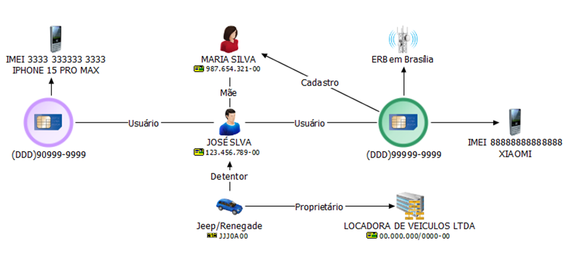
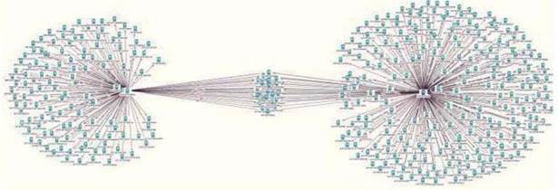
Figura 94 - Exemplos de diagramas de elos.
Conforme será aprofundado no tópico relativo ao cumprimento de mandado de busca, é recomendável que o acesso a dados contidos em mídia computacional e telefones celulares seja precedido de autorização judicial, por se entender que ali estão contidos dados relativos à intimidade da pessoa ligada ao fato investigado, bem como de terceiros, devendo a Polícia Federal zelar pelo acesso aos dados com estrita atenção à legislação e aos normativos.
Além disso, as autoridades policiais são orientadas que a representação por realização de busca e apreensão deve conter não só o pleito de acesso aos dados, mas, como já dito, que seja solicitado ao juízo o acesso imediato ao conteúdo dos celulares, já no local da ação, propiciando a apuração célere dos fatos e mitigando a intrusão do Estado na vida das pessoas em torno do fato, arrecadando somente os materiais pertinentes à investigação.
Recomenda-se aos futuros policiais que, quando da efetiva necessidade de acesso a dados contidos em telefones celulares, seja verificado junto à respectiva unidade se há disponibilidade de recursos tecnológicos específicos que possam auxiliar e dinamizar tal medida. Diversos modelos de smartphones têm utilizado tecnologias que dificultam ou impõem prazo para que as tentativas de extração dos dados sejam eficazes, fato que demanda solicitação prévia ao juízo e será abordado em tópico específico.
A investigação criminal que envolve o rastreamento de dispositivos móveis demanda a compreensão de alguns termos técnicos fundamentais, especialmente aqueles relacionados aos identificadores do chip (SIM Card) e do próprio aparelho celular. Esses elementos funcionam como “marcadores digitais” que permitem ao investigador estabelecer vínculos entre linhas telefônicas, usuários e equipamentos utilizados, constituindo-se em informações essenciais para a reconstrução de rotinas de comunicação e deslocamento.
No âmbito do chip, existem códigos únicos que individualizam tanto o cartão físico quanto a linha nele habilitada, possibilitando não somente a identificação do usuário cadastrado junto à operadora, mas também a correlação entre diferentes chips utilizados em um mesmo aparelho ou, ainda, entre um mesmo chip utilizado em aparelhos distintos. Tais dados, quando devidamente analisados, fornecem subsídios relevantes para a verificação de vínculos associativos entre investigados.
Já no que se refere ao aparelho celular, o dado técnico de maior relevância é o IMEI (International Mobile Equipment Identity). Cada dispositivo possui, como regra, dois IMEIs — um para cada interface de comunicação, em razão da capacidade de operar com dois chips (dual SIM). O IMEI é composto por 14 números principais, acrescidos de um 15º dígito verificador, o qual possibilita validar a integridade do código. A partir desse identificador, é possível não somente individualizar o aparelho em relação a qualquer outro no mundo, mas também obter informações sobre sua marca e modelo, inclusive por meio de ferramentas abertas de consulta, como o portal IMEI.INFO, que possibilita confirmar a qual dispositivo corresponde determinado número de IMEI, este site também realiza o cálculo do dígito verificador, caso o investigador possua somente os 14 primeiros dígitos do IMEI.
Dados do Chip (SIM Card)
| Sigla / Termo | Descrição | Utilidade Investigativa |
|---|---|---|
| ICCID (Integrated Circuit Card Identifier) | Número único gravado fisica mente no chip, identificando o cartão SIM. | Com esse número em mãos, permite-se oficiar a opera dora solicitando o número telefônico vinculado ao ICCID |
| IMSI (International Mobile Subscriber Identity) | Identificador internacional do assinante, vinculado ao chip e à operadora. | Utilizado pela rede para autenticar o usuário e vin cular a linha à operadora, também utilizado em coope ração jurídica internacional |
| MSISDN (Mobile Station International Subscriber Directory Number) | É o número de telefone em si, associado ao chip. | Identificação direta da linha telefônica em uso. |
| Dados cadastrais | Informações do titular regis tradas junto à operadora (nome, CPF, endereço). | Cruciais para vincular juri dicamente a linha a um indivíduo. |
Dados do Aparelho Celular
| Sigla / Termo | Descrição | Utilidade Investigativa |
|---|---|---|
| IMEI (International Mobile Equipment Identity) | Número único do aparelho, composto por 14 dígitos + 1 dígito verificador (total 15). Cada aparelho possui 2 IMEIs, um para cada slot de chip. | Permite individualizar o aparelho em escala glo bal. Pode ser consultado em ferramentas como IMEI.INFO, que revelam marca e modelo do dis positivo. |
Ainda que existam outros identificadores técnicos vinculados ao aparelho celular, o presente caderno restringir-se-á àqueles de efetiva aplicabilidade prática. Dessa forma, elementos como o MAC Address e demais códigos específicos não serão objeto de aprofundamento nesta abordagem, concentrando-se a análise no IMEI, por se tratar do dado de maior relevância investigativa.
O IMEI pode ser facilmente localizado pelo próprio usuário do aparelho em diferentes locais. Em regra, está impresso na etiqueta do aparelho, geralmente na parte interna, sob a bateria ou próximo ao compartimento (gaveta) dos chips. Nos dispositivos mais modernos, também é exibido na embalagem original do telefone e pode ser acessado na tela do celular digitando o código *#06#, que imediatamente revela os números de IMEI vinculados ao dispositivo. Além disso, nos smartphones atuais, é possível consultar o IMEI diretamente no menu de Configurações (em geral, na seção ‘Sobre o telefone’), o que garante ao investigador mais uma via prática para obtenção desse dado.
Figura 95 - IMEI exposto na caixa do celular.
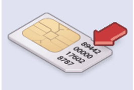
Figura 96 – Exemplos de IMEI e ICCID.
Em síntese, a correta compreensão dos identificadores técnicos vinculados ao chip e ao aparelho celular revela-se indispensável para a atividade investigativa. Esses elementos, quando interpretados integradamente aos registros fornecidos pelas operadoras e às demais ferramentas de análise, permitem ao investigador correlacionar usuários, linhas e dispositivos, reforçando a credibilidade das con clusões e possibilitando a reconstrução de vínculos comunicacionais e padrões de deslocamento. Assim, a utilização criteriosa desses dados transforma-se em importante instrumento de comprovação da autoria e da materialidade em procedimentos de polícia judiciária.
As Estações Rádio-Base (ERBs), também conhecidas como células de telefonia, são estruturas físicas que integram a rede de telecomunicações móveis. Cada ERB é composta por antenas e equipamentos responsáveis por conectar os terminais (aparelhos celulares) à rede da operadora. Essas antenas são distribuídas em setores, cada um cobrindo determinada área geográfica, e registram, a cada acesso, informações como data, hora, duração da conexão e localização apro ximada do terminal atendido.
A abrangência da cobertura de uma ERB varia conforme a região e a densidade de torres/antenas instaladas:
Essa variação deve sempre ser considerada pelo investigador ao interpretar os registros, evitando conclusões categóricas sobre a localização exata de um terminal somente a partir da ERB registrada. A seguir será apresentado um modelo de cobertura de ERBs:
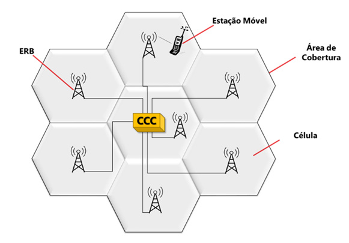
Figura 97 - Exemplo de cobertura de ERBs – Fonte: https://introucaoaredemovel.word
press.com/
Uma rede de telefonia celular divide uma área geográfica em segmentos chamados células (daí a denominação celular). Cada célula possui uma estação rádio-base (ERB) formada por antenas com receptores e emissores de sinal, e ligada a uma central telefônica.
Outro aspecto relevante é o processo de handover, que ocorre quando um aparelho em deslocamento deixa de ser atendido por uma ERB e passa automa ticamente para outra, a fim de manter a comunicação ativa. Esse mecanismo é responsável, por exemplo, por permitir que uma ligação telefônica continue mesmo durante viagens de carro. O terminal monitora constantemente a intensidade do sinal recebido e, quando percebe que o sinal da ERB atual está enfraquecendo, busca automaticamente outra estação mais próxima ou com melhor qualidade de recepção.
Em áreas urbanas, onde há maior densidade de antenas, essa transição cos tuma ocorrer de maneira estável. Já em regiões rurais ou de menor cobertura, pode haver interrupções caso o aparelho não consiga encontrar outra ERB disponível no momento, resultando em quedas de chamadas ou perda temporária de conexão.
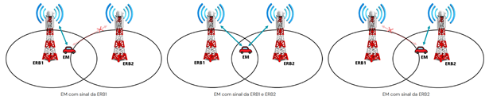
Figura 98 - Processo Handover – Fonte: https://introucaoaredemovel.wordpress.com/
As operadoras também fornecem o azimute, isto é, o ângulo de orientação da antena em relação ao norte geográfico. De forma geral, as torres costumam ser setorizadas em três antenas direcionais, cada uma cobrindo aproximadamente 120° do espaço ao redor, ainda que na prática esses ângulos possam variar para permitir sobreposição e evitar falhas de cobertura. Existem também casos nos quais a torre é dividida em quatro, seis ou mais setores, a depender das características técnicas e da demanda da região.
Essa informação agrega maior precisão à análise investigativa, ao possibilitar restringir a área de abrangência do terminal dentro do raio de cobertura da ERB, indicar a direção aproximada em que o aparelho se encontrava em relação à antena, auxiliar na reconstrução de trajetos pela sucessiva troca de setores e reduzir a margem de incerteza em áreas de sobreposição de cobertura.
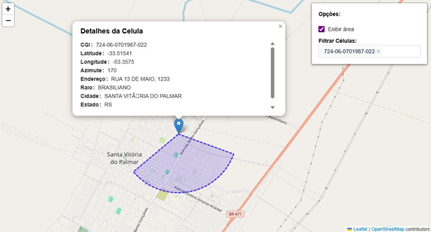
Figura 99 - Exemplo de ERB fornecida pela Telefônica Vivo com seu respectivo Azimute.
Além da utilização do número de telefone (MSISDN), é possível também solicitar às operadoras a vinculação do IMEI (International Mobile Equipment Identity) nos registros de ERB. O IMEI identifica de forma única o aparelho celular, independentemente do chip utilizado. Essa medida é especialmente relevante em investigações nas quais os investigados mudam constantemente de linhas telefô nicas para dificultar o rastreamento. Ao plotar o IMEI, o investigador consegue acompanhar a movimentação do mesmo terminal físico, mesmo que diferentes chips sejam inseridos. Essa técnica permite:
Em junho de 2025, o Brasil contava com 107.056 ERBs ativas, distribuídas entre as principais operadoras de telefonia móvel. A operadora com maior número de antenas era a Vivo (37.591), seguida por Tim (36.631) e Claro (29.515). Outras operadoras regionais também mantêm infraestrutura significativa, como a Brisanet (2.246), Algar (761), Unifique (267) e Sercomtel (45). É possível verificar todas as ERBs no Brasil através do site https://www.telecocare.com.br/mapaerbs/. O monitoramento e a análise de registros de ERB constituem técnicas de grande valor para a investigação criminal, possibilitando ao investigador:
Duas modalidades principais podem ser destacadas:
Embora úteis, os registros de ERB apresentam limitações técnicas. A precisão da localização depende diretamente da densidade de antenas na região, variando de algumas dezenas de metros em áreas centrais de grandes cidades até muitos quilômetros em regiões rurais. Também podem ocorrer sobreposições de cobertura, áreas de sombra e variações no tráfego da rede, fatores que reduzem a exatidão da informação.
Importa ressaltar que a ERB registrada em um evento não corresponde neces sariamente à antena geograficamente mais próxima do terminal, mas sim àquela que, no momento da conexão, ofereceu o sinal de melhor qualidade. Questões como relevo, edificações, interferências e sobrecarga de tráfego influenciam na escolha automática da rede, de modo que o aparelho pode se conectar a uma antena mais distante em detrimento de uma mais próxima.
A experiência prática demonstra a utilidade dessa técnica em investigações de homicídios, sequestros, tráfico de drogas, crimes de colarinho branco e organiza ções criminosas, nas quais a coincidência de registros de ERB, a análise do setor (azimute), a utilização do IMEI e a compreensão do processo de handover foram decisivas para comprovar encontros entre investigados, refutar versões defensivas e situar suspeitos em locais de interesse para a apuração.
Deve-se destacar que, embora a regra geral seja a necessidade de autorização judicial para a obtenção de dados de localização em tempo real, o Código de Processo Penal prevê uma exceção específica para casos relacionados ao tráfico de pessoas. Nessa hipótese, quando houver risco atual ou iminente à vida ou à integridade física da vítima, a autoridade policial poderá requisitar diretamente às empresas de telecomunicações e/ou telemática os meios técnicos necessários à localização, conforme dispõe o artigo 13-B, § 4º, do CPP. O juiz e o Ministério Público devem ser comunicados de imediato, e, não havendo manifestação judicial em até 12 horas, a requisição policial permanece válida.
Além dos registros de chamadas de voz, as operadoras mantêm históricos de conexões de dados (3G/4G/5G), que também são vinculados às ERBs. Esses registros se tornaram extremamente relevantes, uma vez que a maioria dos usuários utiliza seus aparelhos quase continuamente para acessar aplicativos e serviços de internet, gerando um volume muito superior de eventos em comparação com as chamadas telefônicas.
A análise desse tipo de registro permite identificar um padrão de deslocamento do dispositivo, ainda que o investigado não realize ligações de voz. Isso possibilita, por exemplo, verificar se o terminal se desloca com frequência em direção a regiões de fronteira, informação estratégica em investigações de tráfico internacional de drogas, contrabando e descaminho. A seguir apresenta-se um modelo de Extrato de Conexões.
Figura 100 - Extrato de Conexões importados no sistema AT2.
Dessa forma, os extratos de ERBs de conexões representam uma fonte de informação de altíssimo valor probatório, permitindo reconstruir deslocamentos com maior granularidade, identificar meios de transporte utilizados e, em certos contextos, revelar a identidade efetiva por trás de linhas telefônicas usadas clandestinamente.
Além da análise de registros individuais de terminais, é possível que a autoridade policial requeira judicialmente às operadoras a relação de todos os aparelhos que estavam conectados a uma determinada ERB (ou conjunto de ERBs) em um intervalo de tempo definido. Essa medida permite mapear a presença de celulares em determinada área, ainda que não haja conhecimento prévio dos números utilizados pelos investigados.
O material fornecido pela operadora, nesses casos, contém uma lista de linhas que efetivamente se conectaram à célula como “linha servidora”, isto é, os terminais que usaram a ERB para tráfego de voz, SMS ou dados (3G/4G/5G) naquele período.
Essa técnica é especialmente útil em:
Um exemplo emblemático foi a apuração do assassinato da vereadora Marielle Franco, em 2018, quando a Justiça autorizou a quebra do sigilo de dezenas de antenas na região dos fatos, possibilitando à polícia levantar milhares de números que passaram pelas ERBs no trajeto do veículo utilizado no crime. Posteriormente, esse universo foi filtrado com base em outros elementos probatórios até chegar aos alvos principais.
É importante destacar, contudo, que essa medida deve ser proporcional e justificada, delimitando-se espacial e temporalmente as ERBs e o período a ser analisado, a fim de evitar devassas generalizadas e proteger direitos fundamentais.
Em determinadas situações, a simples identificação da ERB utilizada não é suficiente para delimitar com precisão a localização de um terminal. Nessas hipó teses, pode-se recorrer à triangulação de ERBs, técnica que consiste em cruzar os registros de múltiplas antenas que atenderam o mesmo aparelho em um intervalo de tempo, analisando os setores (azimutes) de cada conexão.
A triangulação é especialmente útil quando se busca identificar o local no qual o investigado permanece durante longos períodos, como sua residência ou esconderijo. Para produzir resultados confiáveis, é necessário que o terminal esteja estacionário, ou seja, sem deslocamento. Por esse motivo, a prática demonstra que o período mais adequado para realizar a análise costuma ser à noite, quando o aparelho tende a permanecer imóvel por várias horas.
No processo de triangulação, cada ERB fornece um azimute indicando a direção aproximada do terminal em relação à antena. Ao cruzar pelo menos três setores de ERBs diferentes, é possível delimitar uma área geográfica de intersecção, dentro da qual provavelmente se encontra o aparelho. Quanto maior for o número de ERBs envolvidas, mais restrita será a área delimitada.
Essa metodologia, todavia, apresenta limitações importantes:
Apesar dessas limitações, a triangulação de ERBs tem se mostrado extremamente útil para delimitar locais de interesse investigativo, como possíveis endereços de investigados, depósitos de drogas ou armas, esconderijos e pontos de encontro de membros de organizações criminosas. Segue um exemplo de Triangulação de ERBs.
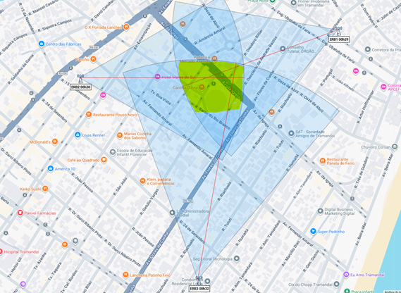
Figura 101 - Exemplo de Triangulação de ERBs.
A imagem acima ilustra o procedimento de triangulação de ERBs, no qual foram analisados os registros de três estações distintas que atenderam o mesmo terminal em um intervalo de tempo. Cada setor de cobertura (em azul), definido pelo azimute da antena (linha vermelha), aponta a direção aproximada do aparelho em relação à ERB. O cruzamento dessas áreas gera a intersecção em amarelo, que representa o ponto de maior probabilidade de localização do terminal. Ressalte-se que a precisão desse método aumenta quando o aparelho permanece estacionário e quando há maior quantidade de antenas envolvidas na análise.
Em diversas investigações, depara-se com a utilização de chips estrangeiros em território nacional. Nesses casos, o terminal não se conecta a uma rede pró pria, mas às ERBs das operadoras brasileiras, por meio de acordos de roaming internacional.
Assim, os registros fornecidos, nomeadamente conhecidos como “extrato reverso” pelas operadoras locais, apresentam a mesma estrutura dos números nacionais, com identificação da ERB, setor e azimute, possibilitando a análise de localização e a reconstrução de trajetos do terminal.
A diferença central está nos dados cadastrais do usuário, que permanecem armazenados junto à operadora estrangeira. Esses dados só podem ser obtidos mediante cooperação internacional.
Portanto, ainda que o número seja estrangeiro, é plenamente viável plotar sua movimentação em território brasileiro, a partir das conexões realizadas com as antenas locais, sendo essa uma ferramenta relevante em investigações de tráfico internacional, crimes transnacionais e atividades de organizações criminosas que utilizam chips de outros países para tentar dificultar a identificação.
A análise de extratos telefônicos constitui ferramenta essencial em determinadas tipologias de investigações policiais, uma vez que permite reconstituir a dinâmica das comunicações realizadas por determinado terminal telefônico. Por meio desse recurso, o investigador consegue identificar padrões de contato, frequência das ligações, horários estratégicos de uso e possíveis vínculos entre investigados.
Os extratos fornecem informações como:
Esse conjunto de informações, quando submetido a uma análise metodológica, permite a construção de diagramas de vínculos, revelando a estrutura comuni cacional de organizações criminosas. Além disso, a comparação entre múltiplos extratos pode indicar pontos de convergência entre diferentes investigados, reforçando hipóteses criminais.
É importante destacar que a análise de extratos telefônicos deve observar:
Legalidade: os dados só podem ser obtidos mediante decisão judicial funda mentada, em respeito à inviolabilidade das comunicações (art. 5º, XII, CF/88 e Lei nº 9.296/1996).
Limitações técnicas: o conteúdo da comunicação não é revelado pelos extratos; estes somente demonstram que houve contato entre os terminais.
Na prática, os extratos enviados pelas operadoras de telefonia costumam vir em formato PDF ou planilhas Excel, com centenas ou milhares de registros que, analisados de forma bruta, são de difícil interpretação. Para superar essa dificuldade, atualmente a Polícia Federal utiliza o sistema AT2 (Análise Telefônica 2), que organiza, cruza e apresenta de maneira visual os vínculos comunicacionais, tornando o trabalho de investigação mais ágil, preciso e confiável.
No próximo tópico será detalhado o funcionamento do AT2 e suas principais funcionalidades, demonstrando como ele potencializa a análise de extratos telefônicos.
O sistema Análise Telefônica 2 (AT2) foi desenvolvido com o objetivo de forne cer aos investigadores da Polícia Federal uma ferramenta de inteligência voltada à exploração de redes complexas de comunicação. A simples leitura dos extratos telefônicos, como visto no tópico anterior, pouco acrescenta à investigação. O ganho real ocorre quando esses registros são processados e interpretados pelo analista através do AT2, que organiza os dados de maneira estruturada e intuitiva.
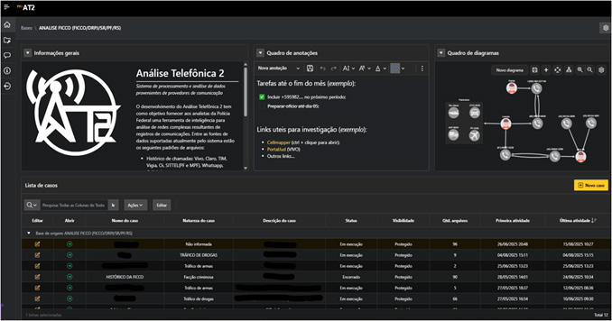
Figura 102 - Página inicial do Sistema Análise Telefônica 2 (AT2).
Atualmente, o sistema permite a importação de múltiplos formatos de arquivos, incluindo:
Cellebrite (exportação XLS).
Apple, Cellebrite (Exportação XLS), Iped (.vcf) ou inserção manual.
Vivo 3G/4G/5G, TIM 3G/4G/5G, Claro 3G/4G/5G.
O primeiro passo consiste na criação de um caso na base da unidade (Delegacia/Setor/Operação), representando a investigação em curso. Em seguida, os extratos enviados pelas operadoras são importados para o sistema. A partir desse momento, o AT2 fornece automaticamente uma série de informações relevantes, como:
O AT2 potencializa a análise dos padrões já mencionados, como:
Um dos recursos mais importantes do AT2 é a integração de agendas de con tatos. Quando agendas extraídas de celulares e armazenamentos em nuvem são inseridas no sistema, os números passam a ser exibidos com os nomes atribuídos pelo próprio investigado. Esse recurso gera vantagens significativas:
Além dos extratos de chamadas, o AT2 também permite a importação de extratos de conexões (3G/4G/5G), os quais são automaticamente plotados em mapas, com as respectivas ERBs e seus azimutes. Esse recurso gera três vantagens práticas imediatas:
Esse recurso amplia o poder analítico do sistema, transformando registros técnicos em mapas de fácil interpretação, fundamentais tanto para o trabalho de inteligência quanto para a instrução probatória.
1. Nome de agenda x titular da operadora
Em uma investigação, um número sem identificação aparecia com alta frequência. No AT2, esse contato surgiu na agenda de outro investigado como “Patrão Paulo”, mas o cadastro da operadora indicava titularidade em nome de Maria de Fátima. O contraste revelou o uso de “laranja”, permitindo identificar quem realmente usava a linha.
2. Funções reveladas pela agenda
Em outro caso, três números intensamente utilizados apareceram sem signi ficado no extrato. Após a importação da agenda do celular no AT2, o sistema nomeou automaticamente como “Cobrador”, “Entregas Noite” e “Estoque (V)”. A simples nomenclatura de agenda apontou as funções desempenhadas pelos interlocutores dentro da ORCRIM.
3. Interseção de agendas
Dois investigados, em estados diferentes da Federação, não possuíam registros de ligações diretas entre si. No entanto, o AT2 mostrou que ambos tinham o mesmo número em suas agendas, ainda que nomeado distintamente (“Júnior do Porto” e “J”). Essa coincidência revelou um elo oculto que conectava ambos os núcleos criminosos.
4. Migração de chip detectada
Um alvo parou de usar seu número habitual, dando a impressão de que teria abandonado a linha. O AT2, contudo, identificou que o novo número estava vinculado ao mesmo IMEI e, na agenda, constava como “Patrão Novo (chip 2)”. Com isso, foi possível manter o monitoramento sem quebra de continuidade.
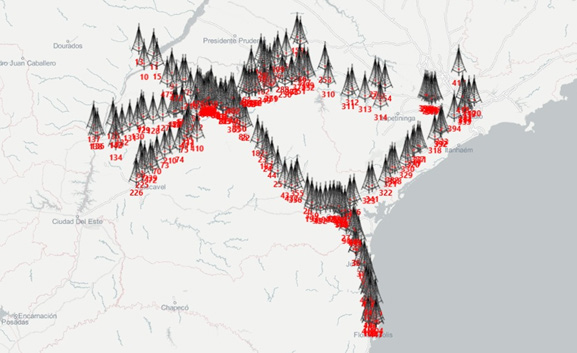
Figura 103 - Extrato de Conexões importados no Sistema Análise Telefônica 2 (AT2).